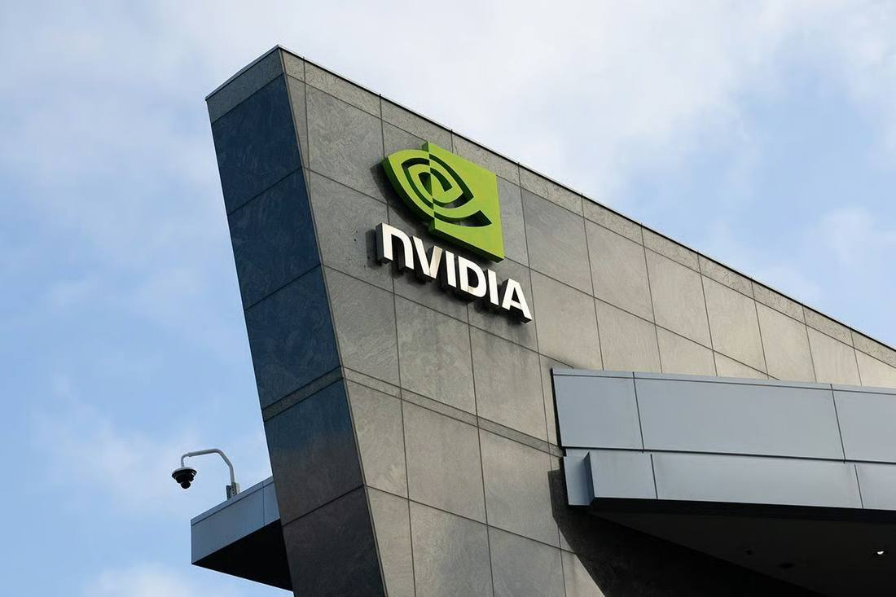
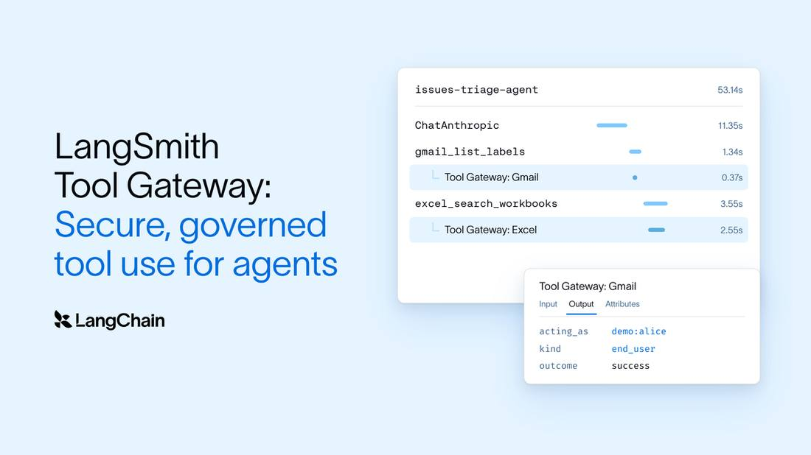
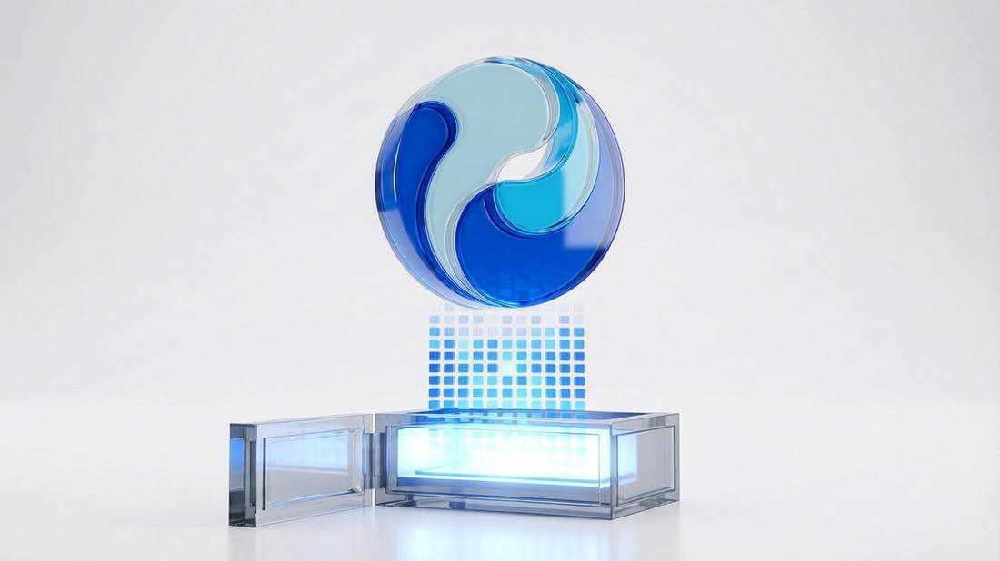
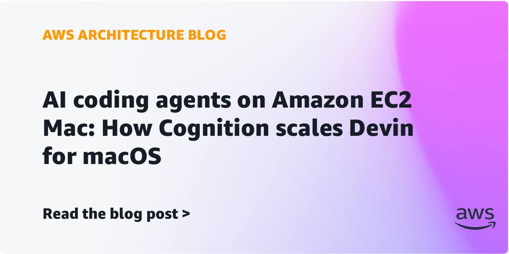
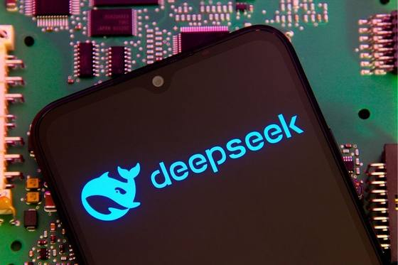
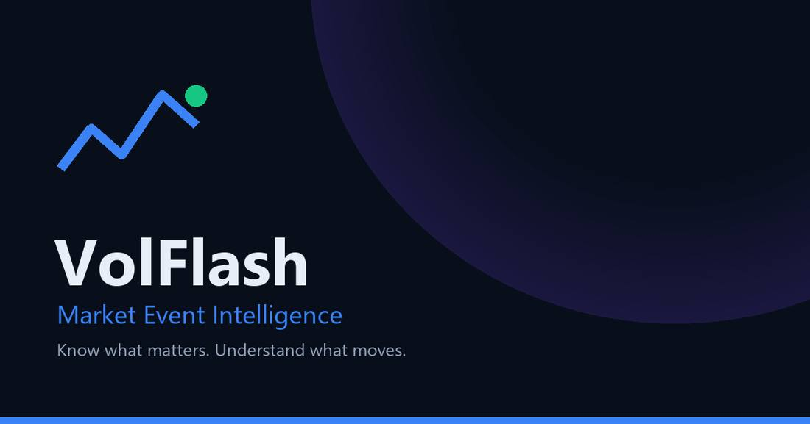
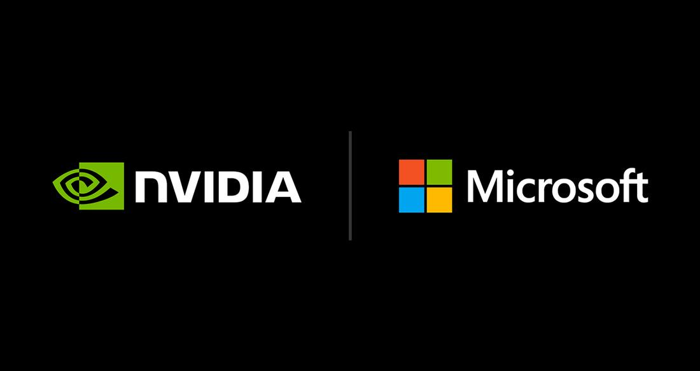

Facts first
Reporting and analysis are kept apart on every page. Sources and uncertainty are stated, not buried.

Reuters reported on Friday, November 20, 2026, that SEC enforcement staff are examining potential accounting issues at Nvidia, citing two people briefed on the matter; the Wall Street Journal reported on Tuesday, November 17, that the SEC was probing Nvidia but could not establish the focus. Shares fell 14% to below $126, erasing roughly $491 billion of market value in a single session, and are down about 48% from the October 6 record close of $239.24. The SEC declined to comment and Nvidia did not immediately respond. The inquiry's start and scope are unknown, and an investigation is not evidence of wrongdoing. This flash updates the Nvidia saga in flashes 410, 412, 413, 416, and 418, and the California attorney general subpoena in flash 436.

LangChain Puts LangSmith Tool Gateway in Public Beta to Govern Agent Tool CallsLangChain launched LangSmith Tool Gateway in public beta on November 19, 2026, on the LangSmith Agent Platform. The managed tool layer handles credentials, identity and access for every agent tool call, routing requests through a single URL per tool kit. Admins can set deny and approval policies, and every call is traced in LangSmith with its tool, server, user, outcome and duration. It works with any MCP client, including LangChain, Deep Agents, Claude Code and Cursor.
Tencent Releases Open Weights for Hy4, Its 770B-Parameter Flagship, Under a New LicenceTencent released the open weights for Hy4 on November 20, 2026, fulfilling the promise made at the model's November 4 launch. The natively multimodal mixture-of-experts model carries 770 billion total parameters with 49 billion active per token and a 1-million-token context window. Three checkpoints are live on Hugging Face, ModelScope and GitCode, alongside a system card with a safety evaluation report. The weights ship under a new Tencent Hy License, not Apache 2.0, with extra commercial terms for large model-as-a-service businesses.Anthropic Closes Friday at $88.30, Down 9% on Day Two but Still Above $83 IPO PriceAnthropic shares closed their second Nasdaq session at $88.30 on Friday, November 20, 2026, down $8.87, or 9.1%, from Thursday's $97.17 close, after opening at $89.86 and dipping to $83.05, five cents above the $83 IPO price. The close is still 6.4% above the offer price. The slide came on a brutal day for the AI trade: the Nasdaq fell 5.3%, wiping out its 2026 gains, the S&P 500 dropped 3.6% for a seventh straight down day, and the VIX jumped to 33. The offering closed with the greenshoe exercised in full, about $93.5 billion. This flash updates flashes 434 and 440.
Devin Gets a Cloud Mac: Cognition Runs macOS Sessions on Amazon EC2 MacAmazon Web Services disclosed on November 19, 2026, how Cognition runs Devin, its AI software engineer, on macOS in the cloud. Devin needed a Mac to build, test and sign iOS, iPad and Mac apps, and Cognition now runs macOS environments on Amazon EC2 Mac bare-metal instances, giving each Devin session a fresh macOS virtual machine in under a minute from a fleet spanning six AWS regions. Nearly 1,000 organizations were running Devin on macOS within six weeks of the September 15, 2026 launch.| WORLD & POLICY | 28 |
| MARKETS & INDUSTRY | 144 |
| AI FRONTIER | 273 |
| ROBOTICS & AI | 36 |
| WEB3 INFRASTRUCTURE | 5 |
| RESEARCH & SCIENCE | 10 |

DeepSeek Closes About 100 Billion Yuan Round as STAR Market IPO NearsChinese AI developer DeepSeek has completed a second external funding round of about 100 billion yuan ($15 billion) as it prepares to pursue an initial public offering on Shanghai's STAR Market, Caixin Global reported on November 20, 2026. Business registration changes completed on November 17 show that a partnership representing the round's new investors took a roughly 17.3% stake. The Information put the total at $15.8 billion and the valuation at about 615.5 billion yuan, which it described as China's largest AI venture raise to date.AI FRONTIERAnthropic's Stabilization Support Is Gone as Morgan Stanley Closes Its PositionAnthropic said on Friday, November 20, 2026, that Morgan Stanley, its IPO stabilization agent, has closed the position meant to support the stock after its market debut, removing a potential source of buying support as the shares fell 11.5% to $86, with an intraday low of $85. The underwriters had already exercised the full 147-million-share greenshoe at the $83 IPO price, lifting aggregate gross proceeds to roughly $93.5 billion, and can no longer use open-market purchases to cover the overallotment if the shares fall below $83. OpenAI's Performance Factory Lets Codex Agents Hunt ChatGPT SlowdownsOpenAI revealed its internal Performance Factory on November 19, 2026, a Codex-powered system that automates the full loop of investigating and fixing ChatGPT performance regressions, from alert to verified recovery. In just over three months the Regression Workflow tracked more than 1,700 investigations and identified root causes in over 600 cases, averaging 17 automated investigations a day. A separate Codex session adversarially reviews each diagnosis, sending about 25% back for more work. Fixes lag diagnosis: around 400 proposed fixes, about 50 shipped fixes influenced by agent suggestions, and 15 exact Codex pull requests merged as written.
OpenAI's Performance Factory Lets Codex Agents Hunt ChatGPT SlowdownsOpenAI revealed its internal Performance Factory on November 19, 2026, a Codex-powered system that automates the full loop of investigating and fixing ChatGPT performance regressions, from alert to verified recovery. In just over three months the Regression Workflow tracked more than 1,700 investigations and identified root causes in over 600 cases, averaging 17 automated investigations a day. A separate Codex session adversarially reviews each diagnosis, sending about 25% back for more work. Fixes lag diagnosis: around 400 proposed fixes, about 50 shipped fixes influenced by agent suggestions, and 15 exact Codex pull requests merged as written. Anthropic Slides Toward Its IPO Price on Day Two as the AI Trade Keeps FallingAnthropic shares slid about 10% in premarket trading on Friday, November 20, 2026, falling toward the $83 IPO price a day after the largest IPO on record closed up 17% at $97.17. Reuters put the early premarket decline at 6% to $91.24; later snapshots from MarketWatch and Barron's showed the slide deepening to roughly $85 to $87.
Anthropic Slides Toward Its IPO Price on Day Two as the AI Trade Keeps FallingAnthropic shares slid about 10% in premarket trading on Friday, November 20, 2026, falling toward the $83 IPO price a day after the largest IPO on record closed up 17% at $97.17. Reuters put the early premarket decline at 6% to $91.24; later snapshots from MarketWatch and Barron's showed the slide deepening to roughly $85 to $87.
Anthropic Greenshoe Exercised in Full, IPO Closes at $93.5 BillionAnthropic said on Friday, November 20, 2026, that its underwriters had exercised the greenshoe option in full, lifting the total proceeds from its initial public offering to roughly $93.5 billion and closing the offering. The option covered 147 million additional Class A shares at the $83 offer price, worth about $12.2 billion, on top of the $81.34 billion priced on November 18. With the separate $26 billion private placement, the full package is about $119.5 billion before fees. This flash updates flash 434, which covered the first-day close at $97.17.
Vera Rubin Is Running in Azure, but the Preview Names No Price, Region, or DateNVIDIA announced at Microsoft Ignite on November 19, 2026 that Vera Rubin NVL72 systems are running in Azure data centers, with access to Azure virtual machines powered by them expanding through Azure's Vera Rubin preview. The announcement also brings broader Nemotron open-model support to Microsoft Foundry and new edge and Windows PC deployment options, but names no virtual machine series, region list, price, or general-availability date.Policy, geopolitics and macro forces — the events that move the map.
OPEN DESK → · 28 REPORTS02Capital, deals and industry structure, with every number sourced.
OPEN DESK → · 144 REPORTS03Models, agents and compute — verified against primary sources before publication.
OPEN DESK → · 273 REPORTS04Humanoids, embodied AI and automation — real deployments, not demos.
OPEN DESK → · 36 REPORTS05Blockchain infrastructure and industry facts. No investment advice.
OPEN DESK → · 5 REPORTS06Papers, labs and frontier science, with the limits of each claim stated.
OPEN DESK → · 10 REPORTSOne sponsor slot per cycle across the briefing and the homepage. Pricing steps up with real traffic. Audience numbers are never inflated.
Reporting and analysis are kept apart on every page. Sources and uncertainty are stated, not buried.
Key facts link back to the publishing institution and the original document, with page screenshots on file.
Each report carries a screenshot of its primary source. One click takes you to the original.
Events, timelines and entities are linked, so a headline becomes a position in a larger picture.
We monitor official announcements, filings, wire reporting and front-line social signals, then merge duplicate coverage of the same event.
Social posts are leads, never sources. Each event is confirmed against its primary source and a second independent report before publication.
Background, timelines and related entities are attached to every event, and follow-ups are published as updates to the same record.